Overview
Choosing Your Approach
| Approach | Skill Level | Time | Best When |
|---|---|---|---|
| Official LFL kit on a post | Beginner — just dig and bolt | 1–2 hours | You buy a pre-built LFL box and just need to mount it |
| Kitchen cabinet upcycle | Easy — mostly just roofing and finishing | Weekend | You find the right cabinet cheap and want a unique, charming result fast |
| Cedar Roof Basic (from scratch) | Intermediate — plywood box + gable roof | Weekend | You want a classic house-shaped library with a cedar shingle roof |
| Modern Two-Story (from scratch) | Intermediate — more angled cuts | Weekend+ | You want a sleek, contemporary look with a sheet-metal roof |
Installation · Official Guide
Installing on a Post
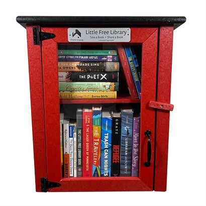
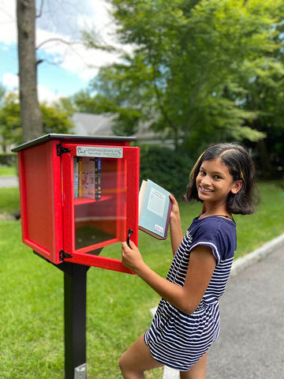
Post installation photos from plan guide
Source: How to Install a Little Free Library — official guide from LittleFreeLibrary.org
This guide applies whether you buy a pre-built LFL box, build one from the plans below, or upcycle a cabinet. The post installation is the same for all of them.
What You Need
- Library box (bought, built, or upcycled)
- 5-foot library post with flat topper platform
- 6 × 2.5" lag (wood) screws
- Power drill + square #2 bit + 7/64" bit (optional, for pre-drilling)
- Post hole digger or shovel
- Level
- Tape measure
- Charter sign + 2 screws (if registering officially)
- Optional: concrete for added post security
- Choose and clear your spot. Consider foot traffic, overnight lighting, and overall visibility. Verify zoning compliance. Call 811 to mark buried utilities. Most libraries go 3–5 feet from the sidewalk edge.
- Attach the charter sign. Using the 2 included screws, mount the sign to the door above the window — where your charter number is visible to visitors. Do this before installation while the library is easy to work with flat on a surface.
- Dig the hole. Dig 2 feet deep × 1 foot wide. At this depth, a 5-foot post sits approximately 3 feet off the ground — a comfortable browsing height for adults. Dig deeper if you want lower access for small children.
- Set and level the post. Center the post in the hole and backfill halfway with dirt. Use your level to confirm the topper platform is even (not just the post). Pack the dirt in firmly. A level platform matters more than a perfectly plumb post.
- Fill the hole. Fill the rest of the hole, tamping dirt down in layers as you go. Packing in stages keeps the post from shifting as you fill. Optional: pour a small amount of concrete around the base for added permanence — generally not necessary unless the soil is very loose or sandy.
- Center the library on the platform. Use a tape measure to center the box on the post topper so it overhangs equally on all sides.
- Bolt it down. Drive 6 × 2.5" lag screws through the base of the library and into the post topper. Pre-drill with a 7/64" bit first if you want to avoid splitting — especially useful with thinner wood bases. Drive screws in a pattern that pulls the library flat and even onto the platform.
- Stock and register. Add books. Map your library at LittleFreeLibrary.org/MapYourLibrary to make it findable by your community on their world map.
Build · Easiest · Upcycle
Kitchen Cabinet Upcycle
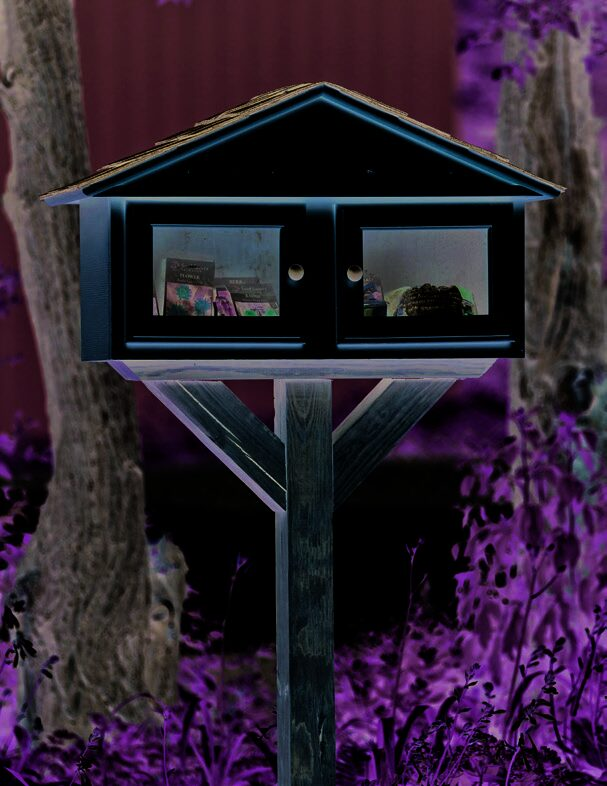
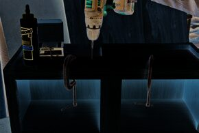
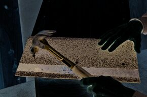
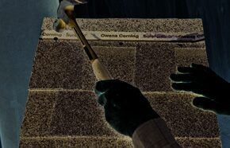
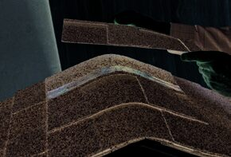
Step photos from Kitchen Cabinet plan
Source: Kitchen Cabinet Upcycle — from the Little Free Library book of project plans
An old kitchen wall cabinet is already a complete six-sided wood box with doors. All it needs is a roof and thorough weatherproofing. You can source a cabinet from a Habitat for Humanity ReStore, Facebook Marketplace, or Craigslist for next to nothing. Frame-and-panel cabinet doors are a bonus — you can easily swap the wood panels for acrylic glazing to create see-through windows.
Choosing the Right Cabinet
Use a wall cabinet rather than a base cabinet. Wall cabinets are the right size, have a finished look on all sides, and don't have the deep recess and toe-kick cutout at the bottom that base cabinets have. Any small-to-medium wall cabinet works. Frame-and-panel doors (common on oak builder-grade cabinets from home centers) let you replace the solid panels with clear acrylic for a window effect.
Build the Roof — Step by Step
This is the main construction task. The roof is a custom gable designed to fit your specific cabinet.
- Lay out the roof shape. Place the cabinet face-down on a ¾" plywood sheet. Draw a line across the plywood, mark its center, and draw a perpendicular line at the center. Use a straightedge to experiment with different roof slopes — the straightedge represents one side of the gable. Mark the slope you like, mirror it to the other side, and mark the resulting roof peak. A roof of about 7" from base to peak is a good starting proportion. This layout serves as your cutting template.
- Cut both gable panels. Remove the cabinet. Draw the triangle you laid out along one edge of the plywood and cut it out. Use this piece as a template to trace and cut the second identical gable.
- Install nailers. Cut two 2×2 nailers about 12" shorter than the cabinet width. Center one on the front top edge of the cabinet (flush with the front face) and one on the rear top edge (flush with the back). Glue and screw each down with four 2.5" wood screws. These give the gables something solid to attach to.
- Attach the gables. Set the cabinet on its back. Glue and screw one gable over the front nailer so the gable's bottom edge overlaps the top of the cabinet by ½" and it's centered side to side. The top angled corners of the gable should just cover the top corners of the cabinet. Flip the cabinet and repeat for the back gable.
- Cut and attach the roof deck panels. Measure the distance between the outside faces of the two gables (this is the deck width) and from peak to bottom edge (this is the deck length). Cut two panels. Apply glue to the top gable edges, then set the roof decks in place so they meet at the peak and are flush front and back. Fasten with four 2" screws along each edge.
- Trim the roof decking. Use quarter-round molding to cap the exposed plywood edges of the roof deck. Miter corners where pieces meet. Round face outward on all pieces. Nail with 1.5" finish nails and glue.
- Install starter shingles. Cut a 3-tab asphalt shingle into a strip by removing the tabs — you want just the upper ~7" strip. Cut it to roof width + ½". Nail it along the bottom edge of each roof plane (adhesive strip near the bottom edge, ¼" overhang beyond the deck). This creates the base that props up the first full shingle row.
- Install full shingles. Cut full-width shingles to roof width + ½". Lay the first row flush over the starter shingle. Each subsequent row overlaps the one below to the tops of the tab slots, and tab slots offset by half a tab width from row to row. Nail just above the adhesive strip on each shingle. Trim the top row at the peak.
- Add ridge cap shingles. Cut a full shingle into thirds along the tab lines (three 12×12" caps). Fold the first cap over the peak, nail one nail on each side. Overlap successive caps the same way. Trim the final cap flush with the rear edge.
Optional: Replace Door Panels with Acrylic Glazing
On frame-and-panel doors, the wood panel sits in a channel in the frame and is not glued — it floats. To convert to acrylic windows: remove the doors, lay face down, slip a piece of paper into the channel to measure its depth, draw cut lines along that depth on the sides and bottom, and make multiple passes with a utility knife to cut out the back lip of the channel. This releases the wood panel. Cut acrylic to the same size as the wood panel (it should have ~1/16" clearance all around for expansion), fit it into the channel, and run a bead of clear silicone caulk around the perimeter to seal and secure it.
Build · From Scratch · Classic
Cedar Roof Basic
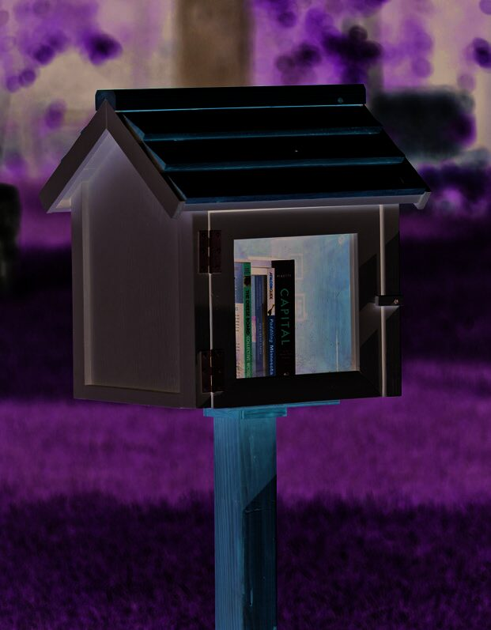
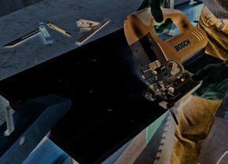
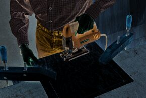
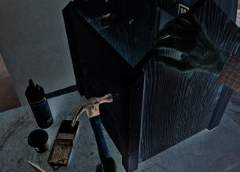
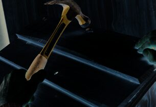
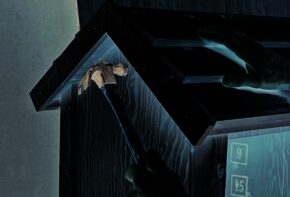
Step photos from Cedar Roof Basic plan
Source: Cedar Roof Basic — from the Little Free Library book of project plans
A classic gable-roof library with a distinctive look: the door is on the side under the eave rather than on the gable end, making the interior easier to access. The roof uses beveled cedar siding (also called lap siding or clapboard) for a stepped shingle effect. The main structure is a plywood box — the cedar roofing and trim are where the character comes from.
Key Materials
- One 4×8' sheet of ¾" plywood — sides, front, back, base, roof deck
- One 2×2' sheet of ¼" plywood — front panel (thinner for the door cutout)
- ⅝×5⅛×96" beveled cedar siding (2 pieces) — roofing boards
- ½" pine in various widths — all trim pieces
- 2×3 pine — front corner trim and roof cap (rip-cut to size)
- ⅛×12×16" acrylic glazing — door window
- 2 exterior door hinges
- Waterproof wood glue + construction adhesive
- Assorted 1" to 2½" wood screws and finish nails, siding nails
Tools Required
- Circular saw + jigsaw
- Miter saw or miter box — many 36° bevel cuts throughout
- Router with ¾" rabbeting bit (optional but helps)
- Drill-driver + pilot-countersink bit
- Hammer + nail set + caulking gun
- Clamps + straightedge + sanding block
Build Overview
1. Cut the Plywood Parts
All pieces are rectangular except the two side panels, which have triangular tops for the gable. To lay out the triangular cut: mark the center of one short side of the side panel, then mark 4⅝" down each long edge. Draw lines from each edge mark to the center mark and cut. Roof deck pieces get a 36° bevel cut along one long edge — set your circular saw to 36° and cut 5/16" in from the long edge.
2. Cut the Door Opening
The front panel gets a 13⅞" wide × 12⅝" tall rectangular cutout, centered side to side with the bottom of the rectangle 1⅟16" from the bottom edge of the panel. Drill a ⅜" starter hole at each inside corner, then cut with a jigsaw. Cut the two narrow sides of the rectangle first to prevent binding.
3. Assemble the Box
Glue and screw the base, two side panels, and back panel together — base fits inside, back panel fits over the side edges. Three 1¾" screws along each joint. Then glue the front panel over the sides and base, fastened with 1" screws (thinner panel, thinner screws).
4. Front Corner Trim
Rip-cut a 2×3 to 1⅞"×1⅜". Cut a ½"×⅞" rabbet along one long edge — this creates a lip that wraps the front corner of the box. Miter the top ends at 36°. Glue into the corners and nail with 2½" finish nails. The rabbet lip sits against the side panel; the face of the trim covers the front panel edge.
5. Install the Roof Deck
The two roof deck panels meet at the peak and overhang the side panels equally. Glue the top edges of the side panels, fit the roof deck panels in place, and fasten with four 1¾" screws each. The eave trim pieces (attached to the bottom edge of each deck panel before mounting) create the bottom edge detail.
6. Install Cedar Roofing
Six beveled cedar boards cover each side of the roof. Two of the six boards get ripped narrower (to 4⅜") for the top row. Apply construction adhesive to the back of each board. Start at the bottom, letting the first board overhang the eave trim by ⅛". Each successive board overlaps the one below by about 1¾", leaving ~3⅜" of the lower board exposed. The lower nail of each pair goes through the board below — this locks the overlap and is how traditional clapboard siding works.
7. Roof Gable Trim and Cap
Four gable trim pieces (36° mitered tops, meeting at the peak) cover the ends of the roof deck and the ends of the cedar roofing boards. The roof cap is cut from leftover 2×3: make opposing 36° bevel cuts to create a V-groove in the bottom face, which straddles the roof peak. Apply construction adhesive in the groove, position flush with the gable trim ends, and nail with four 2½" finish nails angled to avoid poking through the interior roof deck.
8. Build and Hang the Door
Rip a 2×3 to 1¼"×2" and cut a ¾"×¾" rabbet along one edge — the rabbet is where the acrylic glazing sits. Cut doorframe top, bottom, and sides to length, mitering all ends at 45°. Dry-assemble and drill angled countersunk pilot holes at each corner, then glue and screw with 1¾" screws. Mount hinges, hang door on either front corner trim piece. Remove door to paint, then install glazing into rabbet, secure with glazing stops and 1¼" finish nails.
Build · From Scratch · Modern
Modern Two-Story
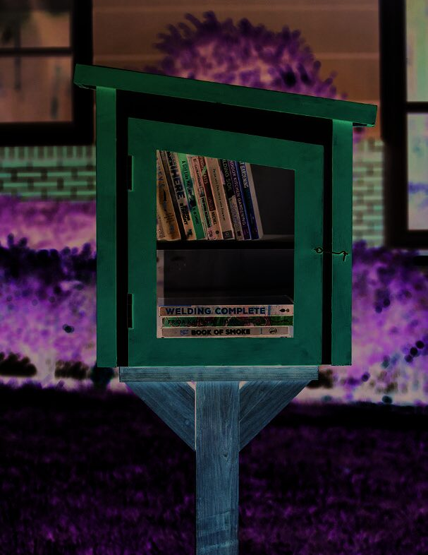
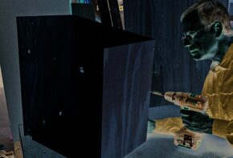
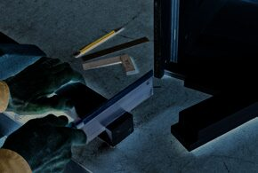
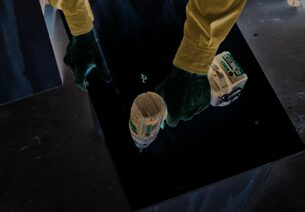
Step photos from Modern Two-Story plan
Source: Modern Two-Story — from the Little Free Library book of project plans
A larger, contemporary structure with a side-sloping shed roof (rather than front-to-back) and a sheet-metal roof surface. The sloping roofline means the door follows the angle — making it a trapezoid rather than a rectangle, which sounds tricky but is mostly just angled miter cuts on otherwise standard pieces. The design has an interior shelf for a two-story book arrangement.
Key Materials
- One 4×8' sheet of ⅝" plywood — all box and shelf panels
- 2×4 pine (8') — doorposts, door header, roof cleat (all rip-cut to size)
- ½" pine in 1" and 1½" widths — corner and roof trim (glued into L-shapes)
- 1×3 pine (8') — doorframe (rip-cut and rabbeted)
- 24×24" piece of 26-gauge galvanized steel or aluminum sheet metal — roof surface
- ⅛×12×16" acrylic glazing — door window
- 2 exterior offset hinges (also called institutional hinges)
- Waterproof wood glue + construction adhesive + clear exterior silicone caulk
Build Overview
1. Cut the Plywood Box
Left and right side panels are different heights (22¼" and 19⁹/16") — this is what creates the roof slope. The back panel is rectangular except for an angled top edge: mark a 17¹⁵/16"×22³/16" rectangle, then measure down 2⁹/16" from one top corner and draw a line to the opposite top corner. Cut along that line.
2. Assemble the Box
Glue and screw the back, base, and side panels with 1⅝" trim screws — back against the rear edge of the base, sides over the edges of both. Add shelf supports (glue and screw to the side panels, butted against base and back). The shelf just rests on the supports without fasteners so it can be removed for tall items.
3. Doorposts and Header
Rip a 2×4 to 1⅞" wide. Cut the two doorposts to length, mitering the tops at 8° and leaving bottoms square. Cut a ⅞"×⁹/16" notch into the bottom of each post — this notch fits over the front edge of the plywood base. The door header (also from rip-cut 2×4) gets both ends mitered at 8° with parallel miters. Glue and screw the header between the two posts to form an upside-down U, then glue and screw this assembly into the front of the box.
4. L-Shaped Corner and Roof Trim
Cut long lengths of 1" and 1½" pine stock and glue them together face-to-edge to create L-shaped trim angles. Let cure fully before cutting to length. Each corner trim piece is square on the bottom end and mitered at 8° on the top. Mark each piece on the structure before cutting so you know which direction the miter goes.
5. Install the Roof
A roof cleat (rip-cut from 2×4 leftover, mitered 8° on both ends) is glued and screwed to the inside top of the back panel. The plywood roof deck rests on this cleat and the door header. Mark screw lines on the deck before installation. Cut the sheet metal with aviation snips and bend a ½"-wide lip along one 17"-edge at 90° — this lip hooks over the eave trim at the bottom of the roof. Apply silicone caulk to the roof deck, lay the sheet metal centered, weight and clamp overnight. Three L-shaped trim pieces finish the top and sides of the roof.
6. The Trapezoidal Door
Rip a 1×3 to 2³/16" wide and cut a ½"×½" rabbet along one edge. Cut doorframe pieces to length with the following miters (viewed from the front): top piece — left end 49°, right end 41°; left side — top 49°, bottom 45°; right side — top 41°, bottom 45°; bottom piece — both ends 45°. Dry-assemble, drill angled pilot holes at each corner, then glue and screw with 3" wood screws. Hang with offset hinges on the left doorpost.
Finishing
Painting, Staining & Weather Protection
| Material | Best Finish | Notes |
|---|---|---|
| Plywood box (pine/fir) | Exterior primer + 2 coats exterior paint | Seal all edges — end grain absorbs moisture fastest |
| Cedar roofing boards | Exterior stain or clear coat (rough face out) | Retains natural grain and color; paint works too with smooth face out |
| Cabinet/particleboard | Exterior primer + 2–3 coats exterior paint — every surface | Particleboard fails catastrophically when wet; no bare edges anywhere |
| Pine trim pieces | Same finish as the main structure | Caulk all trim joints before painting for a clean, weathertight result |
| Sheet metal roof | None needed — leave bare or paint with metal primer + paint | Caulk trim edges where metal meets wood after installation |
| Acrylic glazing | No paint — just clean with a soft cloth | Install after all painting is done so finish doesn't bond to glazing |
Community
Registration & Community
Registering your library is free and puts it on the official world map at LittleFreeLibrary.org — making it findable by neighbors and visitors. You get a charter number and a sign to display on the door.
- 📍 LittleFreeLibrary.org/MapYourLibrary — add your library to the world map
- 🌐 LittleFreeLibrary.org — start your own, buy a kit, or browse the map